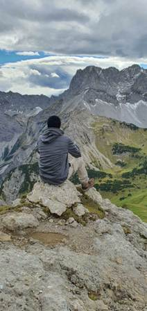

Moja pierwsza strona o mnie

Nazywam sie Dariusz Basisty i wedruje po gorach. Wędrówki górskie
Ten rodzaj turystyki pieszej skupia się na wędrówkach po górach lub terenach górzystych. To najtrudniejsza z
form aktywności pieszych.
Polecamy ją ambitnym piechurom charakteryzującym się dobrą kondycją, pewnością kroku i brakiem lęku wysokości.
Często wędrówka górska przechodzi płynnie w hikingu, trekking, aż po wspinaczkę.
Definicja ta nie jest zależna od wysokości jaką pokonujemy, a raczej miejsca,
w którym uprawiamy dany sport. Przyjmuje się, że do wędrówek
górskich nie potrzebujemy dodatkowego sprzętu.
W momencie, w którym do pokonania trasy musimy użyć naszych rąk, lin lub haków mamy do czynienia ze wspinaczką.